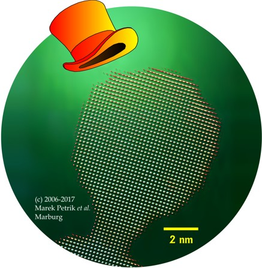

The topical illustration (Fig. a1) is based on an atomic resolution micrograph (see ref. [B6], figure b) of nanocrystalline nickel oxide, nc-NiO. A JEOL EM-3010 transmission electron microscope (TEM) was used and operated in high-resolution bright-field mode at 300 kV. It was equipped with a Gatan CCD camera (2048x2048 pixels). Fast-fourier-transform (FFT) filtering and false-colour rendering were applied to the original image during digital postprocessing by Dr. Andreas Schaper and Achim Weisbrod (electron microscopy & microanalysis laboratory, Philipps-Universitaet).
It was during one of my first sittings at the TEM with Dr. Schaper that we hit upon this beautiful example of a NiO nanocrystal frozen in, as it were, at a crucial stage in the process of crystal growth. Over the years, I have prepared numerous micrographs of nc-NiO at the TEM on my own but never again observed a similar example of what appears to be a classical sintering neck – which it actually might not be considering the perfectly colinear orientation of the two nanocrystals along the two cubic <100> axes, a phenomenon not likely to occur by chance (see ref. [A13]) and not commonly associated with sintering necks.
People found the picture inspiring (see ref. [D1]), and it won the second place in a micrograph competition at the 16th International Microscopy Congress in Sapporo, Japan (Fig. a2).
Nc-NiO has frequently been synthesized by myself and many students at our laboratory (in the group of Bernd Harbrecht, Philipps University). The goal has been first and foremost to investigate the anomalous magnetism long since observed in nanocrystalline antiferromagnets like nc-NiO (Richardson's phenomenon; see ref. [A16] for an introduction to the topic and the history behind it intended for the scientifically minded nonspecialist).
Variable-temperature magnetometry, conducted by myself or Clemens Pietzonka of our laboratory by means of a SQUID magnetometer (one which utilizes a so-called superconducting quantum interference device), reveals a characteristic scaling behaviour, or algebraic dependence on size, of the anomalous magnetic moment of the NiO nanocrystals. This scaling law lends strong support to a disputed hypothesis advanced by Louis Néel according to which the anomalous magnetic moment of nc-NiO is due to a particular kind of random ferrimagnetism brought about by the very small size of the antiferromagnetic NiO crystals (see ref. [A10]).
Thus, the exemplary antiferromagnet NiO, renowned for its complete lack of a magnetic moment, surreptitiously turns into a ferrimagnet when confined to the nanoscale, acquiring a sizable magnetic moment (of the order of one tenth that of metallic nickel) while still being regarded as an antiferromagnet. – It is only fair to call nc-NiO a ferrimagnet in disguise!

Fig. a1: An award-winning illustration

Fig. a2: Something to remember a nanocrystal by... Click on the image for details!